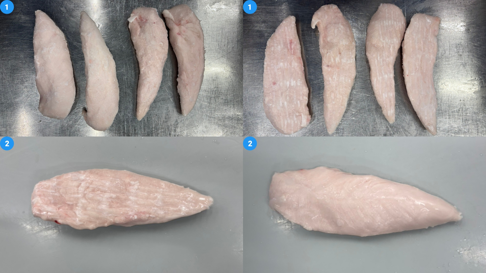
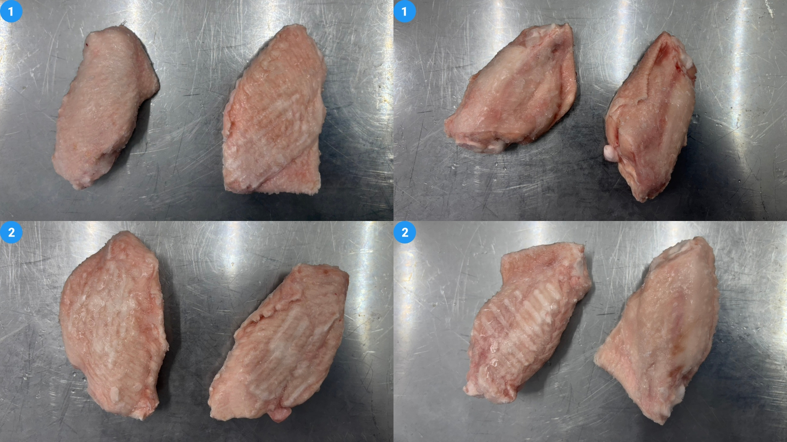
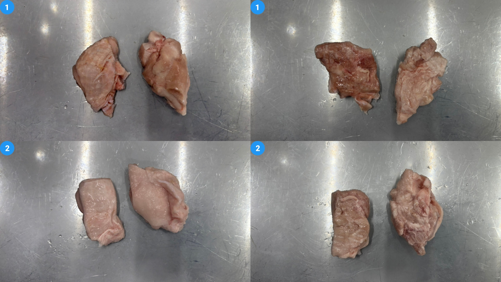
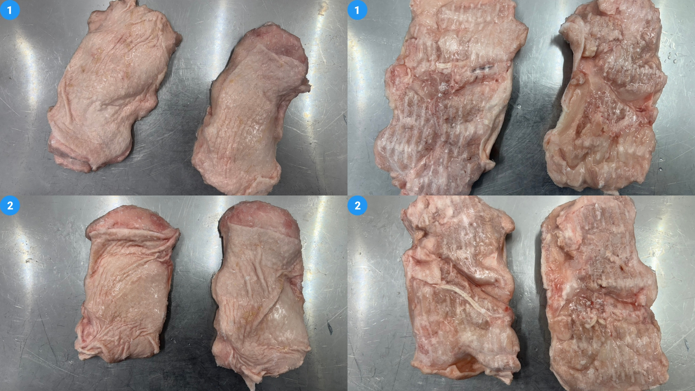
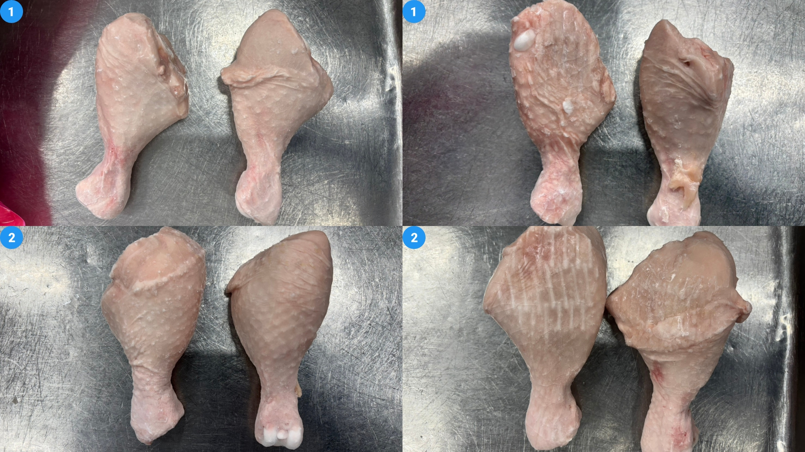
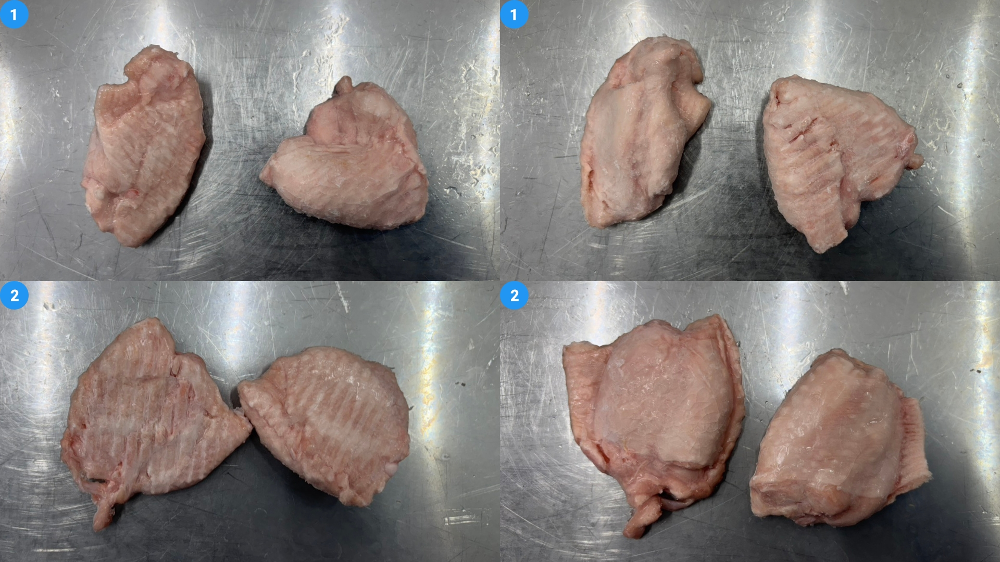
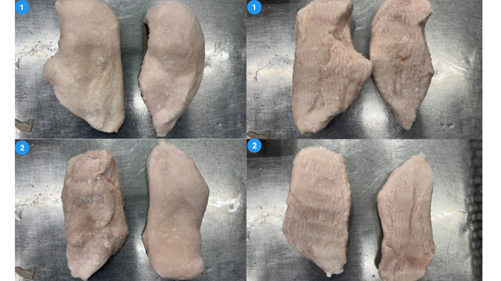
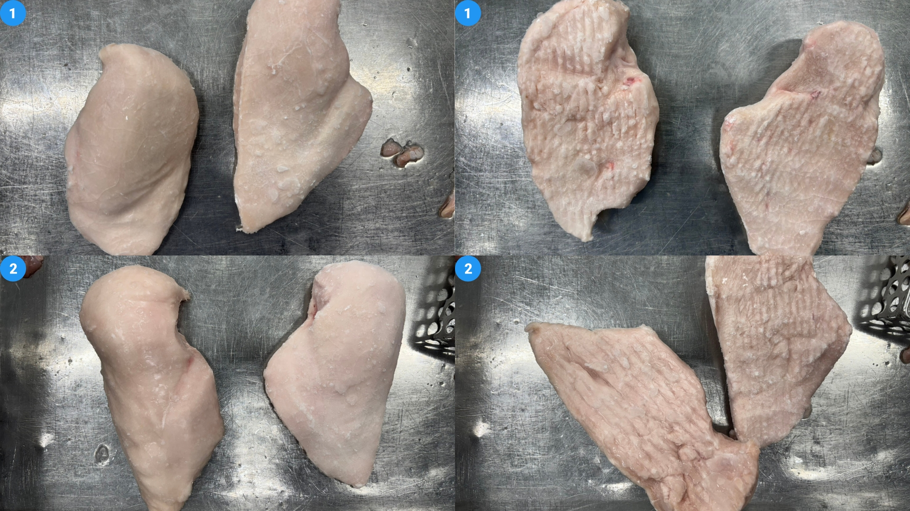

อ่านผลให้จบใน 30 วินาที
มี 7 ประเภทสินค้า 15 condition; เปรียบเทียบอุณหภูมิหลัง IVQF, หลังจุ่ม และหลังรอ 30 นาที โดยแยกเครื่องมือวัด
ตัวเลขในการ์ดใช้มัธยฐานจากค่าดิบ เพื่อไม่ให้ค่าเฉลี่ยผิดในชีตและค่าผิดปกติบิดผล พร้อมแสดงจำนวนจุดที่ผ่านค่าอ้างอิง ≤ −18°C
ผลสรุปการทดลองที่ยืนยัน
ข้อมูลสรุปที่ผู้ใช้ให้เพิ่มเติม · แยกจากค่ารายจุดของ Thermometer และ Data logger ใน Excel
| สินค้า / condition | หลัง Glazing | หลังรอ 30 นาที | จัดเก็บใน CS เพิ่ม | %Pickup | %Thaw loss |
|---|---|---|---|---|---|
| FILLET 40–60 gGlazing IVQF · −95°C · 10:30 นาที · จุ่มน้ำ 1 วินาที | -21.92°C | -14.25°C | 29 ชม. | 11.53% | 6.80%เดิม 1.60% · เพิ่ม 5.20 จุดเปอร์เซ็นต์ |
| MW 35 g.upGlazing IVQF · −95°C · 10:30 นาที · จุ่มน้ำ 1 วินาที | -18.74°C | -13.21°C | 29 ชม. | 12.15% | 7.42%เดิม 6.30% · เพิ่ม 1.12 จุดเปอร์เซ็นต์ |
| MW Boneless 25 g.upGlazing IVQF · −95°C · 10:30 นาที · จุ่มน้ำ 1 วินาที | -15.74°C | -9.85°C | 22 ชม. | 8.26% | 7.52%เดิม 1.77% · เพิ่ม 5.75 จุดเปอร์เซ็นต์ |
| BL TH 135–155 gGlazing IVQF · −95°C · 13:45 นาที · จุ่มน้ำ 1 วินาที | -20.98°C | -16.80°C | 28 ชม. | 7.25% | 6.02%เดิม 0.58% · เพิ่ม 5.44 จุดเปอร์เซ็นต์ |
| Dr 135–155 gGlazing IVQF · −95°C · 23 นาที · จุ่มน้ำ 1 วินาที | -17.92°C | -14.06°C | 20 ชม. | 4.30% | 2.44%เดิม 2.64% · ลด 0.20 จุดเปอร์เซ็นต์ |
| SBB 200–220 g · OP2Glazing IVQF · −80°C · 22 นาที · จุ่มน้ำ 1 วินาที | -22.39°C | -20.00°C | ไม่ระบุ | 5.33% | 5.63%เดิม 4.95% · เพิ่ม 0.68 จุดเปอร์เซ็นต์ |
เปรียบเทียบ %Pickup และ %Thaw loss
ใช้ขีดบน 5.00% ของช่วงเป้า BLK (3–5%) กับทั้ง 6 สินค้า ตามการยืนยันของผู้ใช้ · ผลเทียบคำนวณจาก %Pickup
ภายในเพดานส่วนที่เกิน 5.00%เส้นเพดาน 5.00%
%Pickup เทียบเพดาน Glazing 5.00%
เกินเพดาน 5/6 สินค้า · สูงสุด MW 35 g.up 12.15% · ต่ำสุด Dr 135–155 g 4.30%
FILLET 40–60 g11.53%
เพดาน ≤ 5.00%เกิน 6.53 จุดคิดเป็น 130.60%เกินเพดาน
MW 35 g.up12.15%
เพดาน ≤ 5.00%เกิน 7.15 จุดคิดเป็น 143.00%เกินเพดาน
MW Boneless 25 g.up8.26%
เพดาน ≤ 5.00%เกิน 3.26 จุดคิดเป็น 65.20%เกินเพดาน
BL TH 135–155 g7.25%
เพดาน ≤ 5.00%เกิน 2.25 จุดคิดเป็น 45.00%เกินเพดาน
Dr 135–155 g4.30%
เพดาน ≤ 5.00%เกิน 0.00 จุดคิดเป็น 0.00%ไม่เกินเพดาน
SBB 200–220 g · OP25.33%
เพดาน ≤ 5.00%เกิน 0.33 จุดคิดเป็น 6.60%เกินเพดาน
อ้างอิงช่วงเป้า BLK 3–5% จาก รายงานทดลองครั้งที่ 3; ผู้ใช้กำหนดให้ใช้ขีดบน 5.00% กับผลครั้งนี้ ส่วนที่เกิน = %Pickup − 5.00 (จุดเปอร์เซ็นต์); % ที่เกิน = ส่วนที่เกิน ÷ 5.00 × 100 การเทียบนี้ต้องยืนยันว่า %Pickup และ %Glaze คำนวณบนฐานน้ำหนักเดียวกันก่อนใช้ตัดสินสเปก
%Thaw loss ก่อนและหลัง Glazing
เพิ่มขึ้น 5 จาก 6 สินค้า · ผลต่างระบุเป็นจุดเปอร์เซ็นต์
FILLET 40–60 gเพิ่ม 5.20 จุด
ไม่ Glazing 1.60%Glazing 6.80%
MW 35 g.upเพิ่ม 1.12 จุด
ไม่ Glazing 6.30%Glazing 7.42%
MW Boneless 25 g.upเพิ่ม 5.75 จุด
ไม่ Glazing 1.77%Glazing 7.52%
BL TH 135–155 gเพิ่ม 5.44 จุด
ไม่ Glazing 0.58%Glazing 6.02%
Dr 135–155 gลด 0.20 จุด
ไม่ Glazing 2.64%Glazing 2.44%
SBB 200–220 g · OP2เพิ่ม 0.68 จุด
ไม่ Glazing 4.95%Glazing 5.63%
เทา = ค่าเดิมแบบไม่ Glazing · เขียว = หลัง Glazing
กราฟเส้นเปรียบเทียบรายสินค้า
แกน X = สินค้า 6 รายการตามลำดับตารางด้านบน ไม่ใช่เวลา · แกน Y = ร้อยละ (%) · เส้นเชื่อมใช้ช่วยเปรียบเทียบสินค้า
%Pickup เทียบเพดาน 5.00%
จุดสีส้ม = เกินเพดาน · จุดสีเขียว = ไม่เกิน
%Pickupเพดาน 5.00%
เกินเพดาน 5/6 สินค้า; MW 35 g.up สูงสุด 12.15%
%Thaw loss ก่อน–หลัง Glazing
เทียบค่าเดิมแบบไม่ Glazing กับผลหลัง Glazing
ไม่ GlazingGlazing
เพิ่มขึ้น 5/6 สินค้า; Dr ลดลง 0.20 จุดเปอร์เซ็นต์
ภาพรวมหลังละลาย
ก่อนละลาย อุณหภูมิและลักษณะปรากฏของสินค้าค่อนข้างดี แต่หลังละลายพบปริมาณน้ำออกมากกว่าแบบไม่ Glazing ตามข้อสังเกตหน้างาน ผล %thaw loss เพิ่มขึ้น 5 จาก 6 สินค้า; Dr ลดลง 0.20 จุดเปอร์เซ็นต์
วิธีอ่านตัวเลข
ผลต่าง %thaw loss แสดงเป็น จุดเปอร์เซ็นต์ เช่น FILLET จาก 1.60% เป็น 6.80% เพิ่ม 5.20 จุดเปอร์เซ็นต์ สรุปที่ได้รับไม่ได้ระบุเครื่องมือวัด/วิธีรวมค่าอุณหภูมิ จึงไม่ใช้แทนค่ารายจุดใน Excel; สรุปเพิ่มเติมนี้ไม่มี BLK และ SBB OP1
ข้อมูลรายจุดจาก Excel · ทุก condition
ค่ากลางเป็นมัธยฐาน °C · ตัวเลขในวงเล็บ = จำนวนจุดที่ ≤ −18°C / จุดที่วัดได้ · “—” หมายถึงไม่มีข้อมูลที่ใช้ได้
ไม่จุ่ม · IVQFจุ่ม · Glazing IVQFสีพื้นและขอบแยก condition; สีเส้นในกราฟแยก Thermometer กับ Data logger
| สินค้า / condition | หลัง IVQF | หลังจุ่ม | หลังรอ 30 นาที | จัดเก็บเข้าคลัง | สรุปผล / กราฟ / ภาพ | |||
|---|---|---|---|---|---|---|---|---|
| Thermometer | Logger | Thermometer | Logger | Thermometer | Logger | |||
| FILLET 40–60 gIVQF · −95°C · 10:30 นาทีไม่จุ่ม | -27.6°C (4/4) | -32°C (1/1) | — | — | — | — | ไม่มีข้อมูล | ไม่มีค่าหลังรอ 30 นาทีไปที่ภาพและปุ่มเปิดกราฟ FL.jpg |
| FILLET 40–60 gGlazing IVQF · −95°C · 10:30 นาทีจุ่ม Glazing | -27.6°C (4/4) | -40°C (2/2) | -19.4°C (3/6) | -25°C (2/2) | — | -14.3°C (0/2) | 29.8 ชม. | หลังรอ 30 นาที (Data logger): 0/2 จุด ≤ −18°Cไปที่ภาพและปุ่มเปิดกราฟ FL.jpg |
| MW 35 g.upIVQF · −95°C · 10 นาทีไม่จุ่ม | -21°C (5/5) | -24°C (1/1) | — | — | -19.3°C (3/5) | -15°C (0/1) | ไม่มีข้อมูล | หลังรอ 30 นาที (Data logger): 0/1 จุด ≤ −18°Cไปที่ภาพและปุ่มเปิดกราฟ MW.jpg |
| MW 35 g.upGlazing IVQF · −95°C · 10:30 นาทีจุ่ม Glazing | -21°C (5/5) | -20.5°C (2/2) | -16°C (2/5) | -21°C (2/2) | -14.3°C (0/4) | -12.3°C (0/2) | 29 ชม. | หลังรอ 30 นาที (Data logger): 0/2 จุด ≤ −18°Cไปที่ภาพและปุ่มเปิดกราฟ MW.jpg |
| BLK 20–30 gGlazing IVQF · −95°C · 7:24 นาทีจุ่ม Glazing | -19.1°C (2/2) | -10.5°C (0/1) | -11.3°C (0/3) | -5°C (0/4) | -4.7°C (0/5) | -5°C (0/4) | 30 ชม. | หลังรอ 30 นาที (Data logger): 0/4 จุด ≤ −18°Cไปที่ภาพและปุ่มเปิดกราฟ BLK.jpg |
| BL TH 135–155 gIVQF · −95°C · 13:45 นาทีไม่จุ่ม | -27.6°C (5/5) | -10.5°C (0/1) | — | — | -18.3°C (3/5) | -4.5°C (0/1) | ไม่มีข้อมูล | หลังรอ 30 นาที (Data logger): 0/1 จุด ≤ −18°Cไปที่ภาพและปุ่มเปิดกราฟ BL-TH.jpg |
| BL TH 135–155 gGlazing IVQF · −95°C · 13:45 นาทีจุ่ม Glazing | -27.6°C (5/5) | -7°C (0/2) | -23.2°C (3/5) | -6.8°C (0/2) | -16.8°C (3/6) | -9.3°C (0/2) | 28 ชม. | หลังรอ 30 นาที (Data logger): 0/2 จุด ≤ −18°Cไปที่ภาพและปุ่มเปิดกราฟ BL-TH.jpg |
| Dr 135–155 gIVQF · −95°C · 23 นาทีไม่จุ่ม | -26.6°C (4/4) | — | — | — | -15°C (1/6) | — | ไม่มีข้อมูล | หลังรอ 30 นาที (Thermometer): 1/6 จุด ≤ −18°Cไปที่ภาพและปุ่มเปิดกราฟ DRUM STICK.jpg |
| Dr 135–155 gGlazing IVQF · −95°C · 23 นาทีจุ่ม Glazing | -26.6°C (4/4) | -21.5°C (2/2) | — | -20.8°C (1/2) | -14.7°C (0/5) | -13°C (0/2) | 20 ชม. | หลังรอ 30 นาที (Data logger): 0/2 จุด ≤ −18°Cไปที่ภาพและปุ่มเปิดกราฟ DRUM STICK.jpg |
| MW Boneless 25 g.upIVQF · −95°C · 10 นาทีไม่จุ่ม | -21.6°C (2/4) | — | — | — | -17.8°C (2/6) | — | ไม่มีข้อมูล | หลังรอ 30 นาที (Thermometer): 2/6 จุด ≤ −18°Cไปที่ภาพและปุ่มเปิดกราฟ BONELESS MW.jpg |
| MW Boneless 25 g.upGlazing IVQF · −95°C · 10:30 นาทีจุ่ม Glazing | -21.6°C (2/4) | -19.5°C (1/2) | -17.3°C (2/4) | -14.8°C (1/2) | -9.1°C (0/6) | -10.5°C (0/2) | 22 ชม. | หลังรอ 30 นาที (Data logger): 0/2 จุด ≤ −18°Cไปที่ภาพและปุ่มเปิดกราฟ BONELESS MW.jpg |
| SBB 200–220 g · OP1IVQF · −95°C · 18:30 นาทีไม่จุ่ม | -14.2°C (0/4) | -4°C (0/1) | — | — | — | -8.5°C (0/1) | 27 ชม. | หลังรอ 30 นาที (Data logger): 0/1 จุด ≤ −18°Cไปที่ภาพและปุ่มเปิดกราฟ SBB OP1.jpg |
| SBB 200–220 g · OP1Glazing IVQF · −95°C · 18:30 นาทีจุ่ม Glazing | -14.2°C (0/4) | -9.5°C (0/3) | -9.2°C (0/4) | -9.5°C (0/3) | — | -10°C (0/3) | 27 ชม. | หลังรอ 30 นาที (Data logger): 0/3 จุด ≤ −18°Cไปที่ภาพและปุ่มเปิดกราฟ SBB OP1.jpg |
| SBB 200–220 g · OP2IVQF · −80°C · 22 นาทีไม่จุ่ม | -26.8°C (6/6) | — | — | — | — | — | ไม่มีข้อมูล | ไม่มีค่าหลังรอ 30 นาทีไปที่ภาพและปุ่มเปิดกราฟ SBB OP2.jpg |
| SBB 200–220 g · OP2Glazing IVQF · −80°C · 22 นาทีจุ่ม Glazing | -26.8°C (6/6) | -24°C (1/1) | -21.2°C (5/5) | -23°C (1/1) | — | -20°C (1/1) | ไม่มีข้อมูล | หลังรอ 30 นาที (Data logger): 1/1 จุด ≤ −18°Cไปที่ภาพและปุ่มเปิดกราฟ SBB OP2.jpg |
ดูตามประเภทสินค้า
เลือกสินค้าเพื่อดูทุก condition ช่วงค่าที่วัดได้ และภาพตัวอย่างตามชื่อไฟล์
FILLET 40–60 g
2 condition · ค่าอุณหภูมิแสดงเป็นมัธยฐานของจุดวัด พร้อมช่วงต่ำสุด–สูงสุดและจำนวนจุดที่ ≤ −18°C

IVQF
Condition −95°C · 10:30 นาที · แถว 1–8 ในชีต “สรุปข้อมูล”
ข้อมูลรายจุดจาก Excel · ค่ามัธยฐานแยกเครื่องมือวัด
หลังออกจาก IVQF
Thermometer-27.6°C4 จุด · ช่วง -36 ถึง -19.1°C≤ −18°C: 4/4
Data logger-32°C1 จุด · ช่วง -32 ถึง -32°C≤ −18°C: 1/1
หลังรอ 30 นาที
Thermometerไม่มีข้อมูลที่ใช้ได้
Data loggerไม่มีข้อมูลที่ใช้ได้
เวลาจัดเก็บเข้าคลัง
ไม่มีข้อมูลค่ารายจุดจาก Excel ฝั่ง Data logger; ดูผลสรุปที่ยืนยันด้านบนแสดงกราฟอุณหภูมิThermometer / Data logger · กดเพื่อเปิดหรือพับ
Glazing IVQF
Condition −95°C · 10:30 นาที · แถว 11–20 ในชีต “สรุปข้อมูล”
ข้อมูลรายจุดจาก Excel · ค่ามัธยฐานแยกเครื่องมือวัด
หลังออกจาก IVQF
Thermometer-27.6°C4 จุด · ช่วง -36 ถึง -19.1°C≤ −18°C: 4/4
Data logger-40°C2 จุด · ช่วง -40 ถึง -40°C≤ −18°C: 2/2
หลังจุ่ม Glazing
Thermometer-19.4°C6 จุด · ช่วง -24.7 ถึง -15.6°C≤ −18°C: 3/6
Data logger-25°C2 จุด · ช่วง -25.5 ถึง -24.5°C≤ −18°C: 2/2
หลังรอ 30 นาที
Thermometerไม่มีข้อมูลที่ใช้ได้
Data logger-14.3°C2 จุด · ช่วง -15 ถึง -13.5°C≤ −18°C: 0/2
เวลาจัดเก็บเข้าคลัง
29.8 ชม.ค่ารายจุดจาก Excel ฝั่ง Data logger; ดูผลสรุปที่ยืนยันด้านบนแสดงกราฟอุณหภูมิThermometer / Data logger · กดเพื่อเปิดหรือพับ
ข้อควรตรวจสอบ
- สรุปหน้างานระบุเวลาจัดเก็บเพิ่ม 29 ชม. ขณะที่ Excel ระบุ 29.75 ชม.; แสดงสองแหล่งข้อมูลแยกกัน
MW 35 g.up
2 condition · ค่าอุณหภูมิแสดงเป็นมัธยฐานของจุดวัด พร้อมช่วงต่ำสุด–สูงสุดและจำนวนจุดที่ ≤ −18°C

IVQF
Condition −95°C · 10 นาที · แถว 24–31 ในชีต “สรุปข้อมูล”
ข้อมูลรายจุดจาก Excel · ค่ามัธยฐานแยกเครื่องมือวัด
หลังออกจาก IVQF
Thermometer-21°C5 จุด · ช่วง -30.7 ถึง -19.4°C≤ −18°C: 5/5
Data logger-24°C1 จุด · ช่วง -24 ถึง -24°C≤ −18°C: 1/1
หลังรอ 30 นาที
Thermometer-19.3°C5 จุด · ช่วง -22.8 ถึง -16.2°C≤ −18°C: 3/5
Data logger-15°C1 จุด · ช่วง -15 ถึง -15°C≤ −18°C: 0/1
เวลาจัดเก็บเข้าคลัง
ไม่มีข้อมูลค่ารายจุดจาก Excel ฝั่ง Data logger; ดูผลสรุปที่ยืนยันด้านบนแสดงกราฟอุณหภูมิThermometer / Data logger · กดเพื่อเปิดหรือพับ
Glazing IVQF
Condition −95°C · 10:30 นาที · แถว 34–43 ในชีต “สรุปข้อมูล”
ข้อมูลรายจุดจาก Excel · ค่ามัธยฐานแยกเครื่องมือวัด
หลังออกจาก IVQF
Thermometer-21°C5 จุด · ช่วง -30.7 ถึง -19.4°C≤ −18°C: 5/5
Data logger-20.5°C2 จุด · ช่วง -22.5 ถึง -18.5°C≤ −18°C: 2/2
หลังจุ่ม Glazing
Thermometer-16°C5 จุด · ช่วง -19 ถึง -14°C≤ −18°C: 2/5
Data logger-21°C2 จุด · ช่วง -21 ถึง -21°C≤ −18°C: 2/2
หลังรอ 30 นาที
Thermometer-14.3°C4 จุด · ช่วง -15.8 ถึง -12.3°C≤ −18°C: 0/4
Data logger-12.3°C2 จุด · ช่วง -12.5 ถึง -12°C≤ −18°C: 0/2
เวลาจัดเก็บเข้าคลัง
29 ชม.ค่ารายจุดจาก Excel ฝั่ง Data logger; ดูผลสรุปที่ยืนยันด้านบนแสดงกราฟอุณหภูมิThermometer / Data logger · กดเพื่อเปิดหรือพับ
ข้อควรตรวจสอบ
- หัวข้อฝั่ง Data logger ระบุ FILLET แต่ฝั่ง Thermometer ระบุ MW; จัดหมวดตามฝั่ง Thermometer และต้องยืนยันต้นฉบับ
- สรุปหน้างานยืนยันเวลาเดินสายพาน 10:30 นาที แต่หัวข้อและช่อง Target ใน Excel ระบุ 10 นาที; ใช้ 10:30 ในผลสรุปและคงค่ารายจุดตาม Excel
BLK 20–30 g
1 condition · ค่าอุณหภูมิแสดงเป็นมัธยฐานของจุดวัด พร้อมช่วงต่ำสุด–สูงสุดและจำนวนจุดที่ ≤ −18°C

Glazing IVQF
Condition −95°C · 7:24 นาที · แถว 46–55 ในชีต “สรุปข้อมูล”
ข้อมูลรายจุดจาก Excel · ค่ามัธยฐานแยกเครื่องมือวัด
หลังออกจาก IVQF
Thermometer-19.1°C2 จุด · ช่วง -19.5 ถึง -18.7°C≤ −18°C: 2/2
Data logger-10.5°C1 จุด · ช่วง -10.5 ถึง -10.5°C≤ −18°C: 0/1
หลังจุ่ม Glazing
Thermometer-11.3°C3 จุด · ช่วง -11.4 ถึง -10°C≤ −18°C: 0/3
Data logger-5°C4 จุด · ช่วง -9 ถึง -4°C≤ −18°C: 0/4
หลังรอ 30 นาที
Thermometer-4.7°C5 จุด · ช่วง -5.3 ถึง -3.2°C≤ −18°C: 0/5
Data logger-5°C4 จุด · ช่วง -5.5 ถึง -4°C≤ −18°C: 0/4
เวลาจัดเก็บเข้าคลัง
30 ชม.ค่ารายจุดจาก Excel ฝั่ง Data logger; ดูผลสรุปที่ยืนยันด้านบนแสดงกราฟอุณหภูมิThermometer / Data logger · กดเพื่อเปิดหรือพับ
ข้อควรตรวจสอบ
- เวลาในชื่อ condition 7:24 นาที แต่ช่อง Target ระบุ 7:34 นาที; ต้องยืนยันก่อนใช้ตั้งค่า
BL TH 135–155 g
2 condition · ค่าอุณหภูมิแสดงเป็นมัธยฐานของจุดวัด พร้อมช่วงต่ำสุด–สูงสุดและจำนวนจุดที่ ≤ −18°C

IVQF
Condition −95°C · 13:45 นาที · แถว 58–65 ในชีต “สรุปข้อมูล”
ข้อมูลรายจุดจาก Excel · ค่ามัธยฐานแยกเครื่องมือวัด
หลังออกจาก IVQF
Thermometer-27.6°C5 จุด · ช่วง -30.7 ถึง -19.2°C≤ −18°C: 5/5
Data logger-10.5°C1 จุด · ช่วง -10.5 ถึง -10.5°C≤ −18°C: 0/1
หลังรอ 30 นาที
Thermometer-18.3°C5 จุด · ช่วง -22.2 ถึง 15.2°C≤ −18°C: 3/5
Data logger-4.5°C1 จุด · ช่วง -4.5 ถึง -4.5°C≤ −18°C: 0/1
เวลาจัดเก็บเข้าคลัง
ไม่มีข้อมูลค่ารายจุดจาก Excel ฝั่ง Data logger; ดูผลสรุปที่ยืนยันด้านบนแสดงกราฟอุณหภูมิThermometer / Data logger · กดเพื่อเปิดหรือพับ
ข้อควรตรวจสอบ
- ค่า Thermometer หลังรอมี +15.2°C แต่ค่าเฉลี่ยในชีตสอดคล้องกับ −15.2°C; แสดงค่าดิบและใช้มัธยฐาน ไม่แก้ต้นฉบับ
Glazing IVQF
Condition −95°C · 13:45 นาที · แถว 68–77 ในชีต “สรุปข้อมูล”
ข้อมูลรายจุดจาก Excel · ค่ามัธยฐานแยกเครื่องมือวัด
หลังออกจาก IVQF
Thermometer-27.6°C5 จุด · ช่วง -30.7 ถึง -19.2°C≤ −18°C: 5/5
Data logger-7°C2 จุด · ช่วง -7 ถึง -7°C≤ −18°C: 0/2
หลังจุ่ม Glazing
Thermometer-23.2°C5 จุด · ช่วง -25.2 ถึง -13.6°C≤ −18°C: 3/5
Data logger-6.8°C2 จุด · ช่วง -7 ถึง -6.5°C≤ −18°C: 0/2
หลังรอ 30 นาที
Thermometer-16.8°C6 จุด · ช่วง -22.2 ถึง -11.2°C≤ −18°C: 3/6
Data logger-9.3°C2 จุด · ช่วง -9.5 ถึง -9°C≤ −18°C: 0/2
เวลาจัดเก็บเข้าคลัง
28 ชม.ค่ารายจุดจาก Excel ฝั่ง Data logger; ดูผลสรุปที่ยืนยันด้านบนแสดงกราฟอุณหภูมิThermometer / Data logger · กดเพื่อเปิดหรือพับ
Dr 135–155 g
2 condition · ค่าอุณหภูมิแสดงเป็นมัธยฐานของจุดวัด พร้อมช่วงต่ำสุด–สูงสุดและจำนวนจุดที่ ≤ −18°C

IVQF
Condition −95°C · 23 นาที · แถว 80–87 ในชีต “สรุปข้อมูล”
ข้อมูลรายจุดจาก Excel · ค่ามัธยฐานแยกเครื่องมือวัด
หลังออกจาก IVQF
Thermometer-26.6°C4 จุด · ช่วง -30.9 ถึง -25°C≤ −18°C: 4/4
Data loggerไม่มีข้อมูลที่ใช้ได้
หลังรอ 30 นาที
Thermometer-15°C6 จุด · ช่วง -19.1 ถึง -11.8°C≤ −18°C: 1/6
Data loggerไม่มีข้อมูลที่ใช้ได้
เวลาจัดเก็บเข้าคลัง
ไม่มีข้อมูลค่ารายจุดจาก Excel ฝั่ง Data logger; ดูผลสรุปที่ยืนยันด้านบนแสดงกราฟอุณหภูมิThermometer / Data logger · กดเพื่อเปิดหรือพับ
ข้อควรตรวจสอบ
- Data logger ระบุว่า “ข้อมูลเสีย” จึงไม่ใช้สรุปอุณหภูมิ
Glazing IVQF
Condition −95°C · 23 นาที · แถว 90–99 ในชีต “สรุปข้อมูล”
ข้อมูลรายจุดจาก Excel · ค่ามัธยฐานแยกเครื่องมือวัด
หลังออกจาก IVQF
Thermometer-26.6°C4 จุด · ช่วง -30.9 ถึง -25°C≤ −18°C: 4/4
Data logger-21.5°C2 จุด · ช่วง -24.5 ถึง -18.5°C≤ −18°C: 2/2
หลังจุ่ม Glazing
Thermometerค่าต้นทางสลับแถว · งดตีความ
Data logger-20.8°C2 จุด · ช่วง -24 ถึง -17.5°C≤ −18°C: 1/2
หลังรอ 30 นาที
Thermometer-14.7°C5 จุด · ช่วง -17.5 ถึง -12.6°C≤ −18°C: 0/5
Data logger-13°C2 จุด · ช่วง -14 ถึง -12°C≤ −18°C: 0/2
เวลาจัดเก็บเข้าคลัง
20 ชม.ค่ารายจุดจาก Excel ฝั่ง Data logger; ดูผลสรุปที่ยืนยันด้านบนแสดงกราฟอุณหภูมิThermometer / Data logger · กดเพื่อเปิดหรือพับ
ข้อควรตรวจสอบ
- แถวอุณหภูมิน้ำเย็น/หลังจุ่มฝั่ง Thermometer มีค่าดูสลับตำแหน่ง จึงไม่ใช้สองแถวนั้นตัดสินผล
MW Boneless 25 g.up
2 condition · ค่าอุณหภูมิแสดงเป็นมัธยฐานของจุดวัด พร้อมช่วงต่ำสุด–สูงสุดและจำนวนจุดที่ ≤ −18°C

IVQF
Condition −95°C · 10 นาที · แถว 102–109 ในชีต “สรุปข้อมูล”
ข้อมูลรายจุดจาก Excel · ค่ามัธยฐานแยกเครื่องมือวัด
หลังออกจาก IVQF
Thermometer-21.6°C4 จุด · ช่วง -34.1 ถึง -15°C≤ −18°C: 2/4
Data loggerไม่มีข้อมูลที่ใช้ได้
หลังรอ 30 นาที
Thermometer-17.8°C6 จุด · ช่วง -19.2 ถึง -12.2°C≤ −18°C: 2/6
Data loggerไม่มีข้อมูลที่ใช้ได้
เวลาจัดเก็บเข้าคลัง
ไม่มีข้อมูลค่ารายจุดจาก Excel ฝั่ง Data logger; ดูผลสรุปที่ยืนยันด้านบนแสดงกราฟอุณหภูมิThermometer / Data logger · กดเพื่อเปิดหรือพับ
ข้อควรตรวจสอบ
- Data logger ระบุว่า “ข้อมูลเสีย” จึงไม่ใช้สรุปอุณหภูมิ
Glazing IVQF
Condition −95°C · 10:30 นาที · แถว 112–121 ในชีต “สรุปข้อมูล”
ข้อมูลรายจุดจาก Excel · ค่ามัธยฐานแยกเครื่องมือวัด
หลังออกจาก IVQF
Thermometer-21.6°C4 จุด · ช่วง -34.1 ถึง -15°C≤ −18°C: 2/4
Data logger-19.5°C2 จุด · ช่วง -24.5 ถึง -14.5°C≤ −18°C: 1/2
หลังจุ่ม Glazing
Thermometer-17.3°C4 จุด · ช่วง -21.2 ถึง -11.1°C≤ −18°C: 2/4
Data logger-14.8°C2 จุด · ช่วง -20 ถึง -9.5°C≤ −18°C: 1/2
หลังรอ 30 นาที
Thermometer-9.1°C6 จุด · ช่วง -10.1 ถึง -8.4°C≤ −18°C: 0/6
Data logger-10.5°C2 จุด · ช่วง -13 ถึง -8°C≤ −18°C: 0/2
เวลาจัดเก็บเข้าคลัง
22 ชม.ค่ารายจุดจาก Excel ฝั่ง Data logger; ดูผลสรุปที่ยืนยันด้านบนแสดงกราฟอุณหภูมิThermometer / Data logger · กดเพื่อเปิดหรือพับ
ข้อควรตรวจสอบ
- สรุปหน้างานยืนยันเวลาเดินสายพาน 10:30 นาที แต่หัวข้อและช่อง Target ใน Excel ระบุ 10 นาที; ใช้ 10:30 ในผลสรุปและคงค่ารายจุดตาม Excel
SBB 200–220 g
4 condition · ค่าอุณหภูมิแสดงเป็นมัธยฐานของจุดวัด พร้อมช่วงต่ำสุด–สูงสุดและจำนวนจุดที่ ≤ −18°C
OP1 · −95°C · 18:30 นาที
กราฟแยกตาม IVQF และ Glazing IVQF · จับคู่ OP กับ condition ตามการยืนยันของผู้ใช้

IVQF
Condition −95°C · 18:30 นาที · แถว 124–131 ในชีต “สรุปข้อมูล”
ข้อมูลรายจุดจาก Excel · ค่ามัธยฐานแยกเครื่องมือวัด
หลังออกจาก IVQF
Thermometer-14.2°C4 จุด · ช่วง -14.8 ถึง -10°C≤ −18°C: 0/4
Data logger-4°C1 จุด · ช่วง -4 ถึง -4°C≤ −18°C: 0/1
หลังรอ 30 นาที
Thermometerไม่มีข้อมูลที่ใช้ได้
Data logger-8.5°C1 จุด · ช่วง -8.5 ถึง -8.5°C≤ −18°C: 0/1
เวลาจัดเก็บเข้าคลัง
27 ชม.ค่ารายจุดจาก Excel ฝั่ง Data logger; ดูผลสรุปที่ยืนยันด้านบนแสดงกราฟอุณหภูมิThermometer / Data logger · กดเพื่อเปิดหรือพับ
ข้อควรตรวจสอบ
- ช่อง Target เวลาเดินสายพานฝั่ง Data logger ระบุ 10 นาที แต่ชื่อ condition/ค่าบันทึกเป็น 18:30 นาที
Glazing IVQF
Condition −95°C · 18:30 นาที · แถว 134–143 ในชีต “สรุปข้อมูล”
ข้อมูลรายจุดจาก Excel · ค่ามัธยฐานแยกเครื่องมือวัด
หลังออกจาก IVQF
Thermometer-14.2°C4 จุด · ช่วง -14.8 ถึง -10°C≤ −18°C: 0/4
Data logger-9.5°C3 จุด · ช่วง -14 ถึง -6°C≤ −18°C: 0/3
หลังจุ่ม Glazing
Thermometer-9.2°C4 จุด · ช่วง -12.7 ถึง -8.5°C≤ −18°C: 0/4
Data logger-9.5°C3 จุด · ช่วง -14 ถึง -6.5°C≤ −18°C: 0/3
หลังรอ 30 นาที
Thermometerไม่มีข้อมูลที่ใช้ได้
Data logger-10°C3 จุด · ช่วง -12 ถึง -10°C≤ −18°C: 0/3
เวลาจัดเก็บเข้าคลัง
27 ชม.ค่ารายจุดจาก Excel ฝั่ง Data logger; ดูผลสรุปที่ยืนยันด้านบนแสดงกราฟอุณหภูมิThermometer / Data logger · กดเพื่อเปิดหรือพับ
ข้อควรตรวจสอบ
- ช่อง Target เวลาเดินสายพานฝั่ง Data logger ระบุ 10 นาที แต่ชื่อ condition/ค่าบันทึกเป็น 18:30 นาที
- หัวข้อ Thermometer อยู่แถวถัดจากหัวข้อ Data logger; ใช้ชุดข้อมูลตามบล็อกเดียวกัน
OP2 · −80°C · 22 นาที
กราฟแยกตาม IVQF และ Glazing IVQF · จับคู่ OP กับ condition ตามการยืนยันของผู้ใช้

IVQF
Condition −80°C · 22 นาที · แถว 146–153 ในชีต “สรุปข้อมูล”
ข้อมูลรายจุดจาก Excel · ค่ามัธยฐานแยกเครื่องมือวัด
หลังออกจาก IVQF
Thermometer-26.8°C6 จุด · ช่วง -32.1 ถึง -23.9°C≤ −18°C: 6/6
Data loggerไม่มีข้อมูลที่ใช้ได้
หลังรอ 30 นาที
Thermometerไม่มีข้อมูลที่ใช้ได้
Data loggerไม่มีข้อมูลที่ใช้ได้
เวลาจัดเก็บเข้าคลัง
ไม่มีข้อมูลค่ารายจุดจาก Excel ฝั่ง Data logger; ดูผลสรุปที่ยืนยันด้านบนแสดงกราฟอุณหภูมิThermometer / Data logger · กดเพื่อเปิดหรือพับ
ข้อควรตรวจสอบ
- Data logger ระบุว่า “ข้อมูลเสีย” จึงไม่ใช้สรุปอุณหภูมิ
Glazing IVQF
Condition −80°C · 22 นาที · แถว 156–165 ในชีต “สรุปข้อมูล”
ข้อมูลรายจุดจาก Excel · ค่ามัธยฐานแยกเครื่องมือวัด
หลังออกจาก IVQF
Thermometer-26.8°C6 จุด · ช่วง -32.1 ถึง -23.9°C≤ −18°C: 6/6
Data logger-24°C1 จุด · ช่วง -24 ถึง -24°C≤ −18°C: 1/1
หลังจุ่ม Glazing
Thermometer-21.2°C5 จุด · ช่วง -24.7 ถึง -19.5°C≤ −18°C: 5/5
Data logger-23°C1 จุด · ช่วง -23 ถึง -23°C≤ −18°C: 1/1
หลังรอ 30 นาที
Thermometerไม่มีข้อมูลที่ใช้ได้
Data logger-20°C1 จุด · ช่วง -20 ถึง -20°C≤ −18°C: 1/1
เวลาจัดเก็บเข้าคลัง
ไม่มีข้อมูลค่ารายจุดจาก Excel ฝั่ง Data logger; ดูผลสรุปที่ยืนยันด้านบนแสดงกราฟอุณหภูมิThermometer / Data logger · กดเพื่อเปิดหรือพับ
วิธีอ่านและขอบเขตข้อมูล
- คำนวณจากค่าดิบรายจุดในชีต “สรุปข้อมูล”; ตัดช่อง n/a, ช่องว่าง และค่า error ของ Excel ออกจากการคำนวณ
- รายงานมัธยฐาน ช่วงค่าต่ำสุด–สูงสุด และจำนวนจุดที่ ≤ −18°C; ค่าอ้างอิงในไฟล์ไม่ใช่คำอนุมัติของ QA
- “เวลาจัดเก็บเข้าคลัง” เป็นตัวเลขชั่วโมงที่ระบุในไฟล์ ไม่ใช่หลักฐานว่าอุณหภูมิสินค้าผ่านเกณฑ์ตลอดช่วงนั้น
ข้อมูลที่ต้องยืนยัน
- วันที่ทดลอง วิธีวัด/ตำแหน่ง logger และการสอบเทียบไม่ได้ระบุในชีตสรุป
- มี logger ที่ระบุข้อมูลเสีย 3 condition และหลายหัวข้อ/เวลาในไฟล์ไม่ตรงกัน; รายละเอียดแสดงใต้ condition ที่เกี่ยวข้อง
- ภาพใช้ประกอบลักษณะสินค้าตามชื่อไฟล์ ไม่ยืนยันผลคุณภาพ; สำหรับ SBB ผู้ใช้ยืนยันว่า OP1 = −95°C และ OP2 = −80°C แต่หมายเลข 1/2 ภายในภาพไม่ได้ระบุว่าเป็นจุดวัดใด; ไม่มีข้อมูล Dripping, %Glaze, อุณหภูมิ CS3 หรือคุณภาพหลังเก็บในชีตนี้ จึงยังสรุปผลด้านดังกล่าวไม่ได้